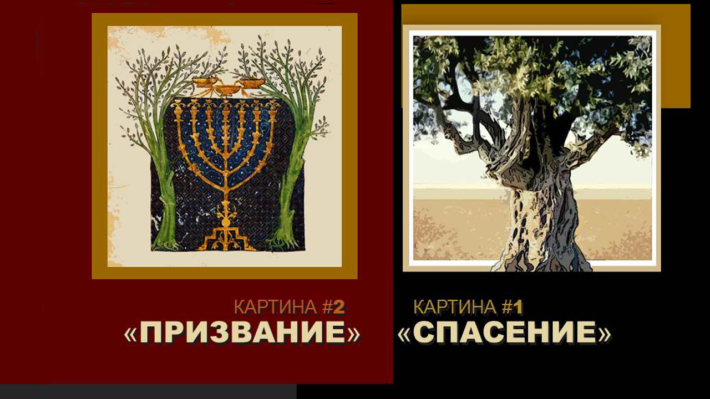
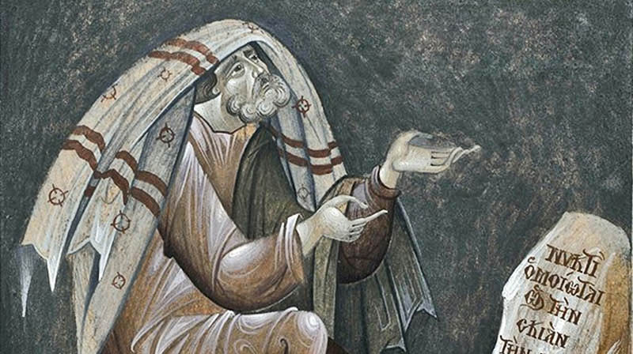

Israel and the Church
14 articles

Salvation and Calling. Preserving National Identity in God2018 · Israel and the Church- The Ten Commandments (Anochi). Prayerful Chant2018 · Israel and the Church, Biblical Feasts
- A Hasid Who Accepted Messiah Yeshua, on the Film "A New Spirit"2018 · Israel and the Church

The Mystery of the Apostle Paul. Israel and the Church2015 · Israel and the Church- The Sukkah and the Wild Olive. Building a Sukkah as Written2015 · Biblical Feasts, Israel and the Church
 The Creativity of Faith. A Vineyard of One's Own in Israel2015 · Israel and the Church, Travels
The Creativity of Faith. A Vineyard of One's Own in Israel2015 · Israel and the Church, Travels The Jewish Character of Worship2015 · The Language of the Bible, Israel and the Church
The Jewish Character of Worship2015 · The Language of the Bible, Israel and the Church Israel and the Church. First Love2015 · Israel and the Church
Israel and the Church. First Love2015 · Israel and the Church- Kinderfresser, the Child Eater2015 · Artifacts, Israel and the Church, Travels
 The Two Shall Be One. Israel and the Church2015 · Israel and the Church
The Two Shall Be One. Israel and the Church2015 · Israel and the Church Israel and the Church: Two Halves of One Heart2015 · Israel and the Church
Israel and the Church: Two Halves of One Heart2015 · Israel and the Church- Shulamit. The Dance of Two Camps (Song of Songs 7:1)2015 · Israel and the Church
- Let Each Remain in His Calling2014 · Israel and the Church
- Turn Us, and We Shall Be Turned!2014 · Biblical Feasts, Israel and the Church, The Bible and the Artist